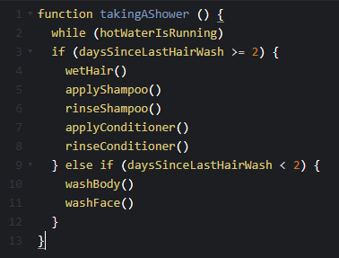
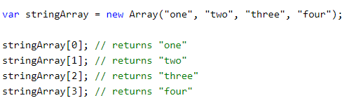
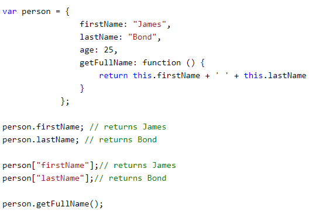

HTML and CSS go hand in hand, usually, though we got to admit that HTML is slightly more independent, and could survive on its own, albeit in a bland fashion. A lot of analogies that come to mind is to style and individualise something that would otherwise not stand out or be, for the lack of a better word, boring. Don’t get me wrong, I love my sourdough slice, but it becomes so much more appetising and appreciated by me, when I put some Nuttelex and salt on top! A canvas could be hung on its own as it is, it comes in various sizes and coarseness levels. But it’s so much more engaging and interesting when it’s the holder of a piece of art! CSS on its own would, however, not really make a substantial website or anything really, but an unused collection of styling possibilities. Unworn clothes, for instance. Paints and embellishments, not applied to their respective canvas. Furniture and decor that has no house to be put into. You get the drift… So, to conclude, it’s important to see HTML and CSS separately to fully appreciate their values and differences. HTML on its own is ‘the structure’ and CSS on its own is ‘the coating’ or styling.
Control flow describes the order in which tasks are being executed by a function. If/else condition statements help to make a streamlined, more individual experience, rather than cancelling out of a function if the first condition is not met. These can get as simple or as complex as the interaction outcome needs it to be. A possible analogy to explain this would be the process of taking a shower. Since I don’t wash my hair every single day, I can make it a condition of whether or not to include my hair in the daily shower process. Also, I will only perform my in-shower activities while the hot water is running. Otherwise, those actions are pointless (at least for their intended purpose!). So, I’m including a while loop. Loops are helpful to determine the iteration or duration frequency of a function - they can be dependent on another function or be following a pre-set number or repetitions. All this could be written as a function like so:

The DOM is, in a way, the gateway for languages like JavaScript to access all elements of a document, in most cases a website. It translates all of the HTML components into a treelike node-system that makes it possible for all these elements to be accessed and manipulated. It’s what we as developers need to implement interactivity into our chosen elements.
For instance, if I want to add some interaction or animation that is triggered by a click on the respective element to one of my blog posts, but don’t want the entire page to reload, I will need to add the necessary JavaScript functions and point them to the targeted element(s). This could be a sub-nav inside my cultural blog posts, where one can click between all my cultural blog posts as tabs while the page doesn’t need to reload to another URL.
Both, arrays and objects, can hold groupings of data. Usually, accessing data from an array will be possible with knowing the data item’s index position. More often than not, arrays will be made up of the same data type or element they came from. For example, the document.getElementsByClass(‘name’) method will return an array of elements that are all assigned that particular class of ‘name’.
An object, on the other hand, is a grouping of properties (‘keys’) that can have different values each. One can access individual properties from the object, but then also go one level deeper and access the values for each property.
One could say that while an array is two-dimensional (element-type; which position in the list of these element types), an object has three dimensions (various element types; positions of these element types; values of each element type). It’s a bit of a wobbly analogy, but I hope it gets the point across.
Example for accessing data in an array:

Example for accessing data in an object:

A function is a set of ‘instructions’ for a task to be performed. Once defined, it can be called, through various triggers, or ‘events’. Functions are useful, because they can be used multiple times, with varying parameters, without ever having to write all of these actions for each input individually. In short: they are preserving time and effort, plus, they make code more readable and efficient.